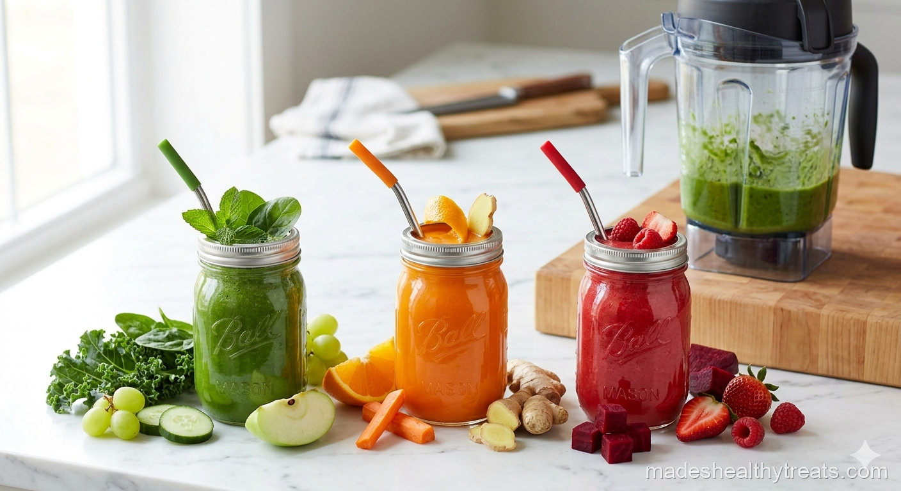

How Juice Recipes Without Juicer Equipment Saved My Counter
I wanted a juicer for the longest time, but I could not make myself press buy. Every time I looked at the price, I imagined the machine taking up half my counter and silently judging me when I forgot to use it. So it sat in my cart for three months while I made excuses.
Then I learned how to make juice recipes without juicer equipment, and it felt like someone opened a window. All I needed was my blender, a nut milk bag, and a little patience. Suddenly fresh juice felt possible without a new appliance.
The Blender Method I Use Every Time
The method is simple. I chop fruits and vegetables small enough for my blender, add a splash of water if needed, and blend on high until everything is completely broken down. Then I pour the mixture into a nut milk bag or fine mesh strainer and squeeze until the juice runs into a bowl or pitcher.
I serve fresh juice immediately because that is when the flavor is brightest. If I need to store it, I pour it into a jar with a tight lid and keep it in the fridge for up to 24 hours. After that, the flavor starts getting tired.
My Green Detox Juice
When I want something crisp and clean, I make green detox juice with cucumber, celery, spinach, green apple, lemon, ginger, and a splash of cold water. I blend everything until it looks wildly green, then strain it until the juice is smooth and bright.
This is one of my favorite juice recipes without juicer equipment because it tastes fresh instead of harsh. The apple softens the greens, the lemon sharpens everything, and the ginger makes it feel alive.
My Carrot Ginger Orange Juice
For mornings when I want color and warmth, I blend carrots, orange segments, ginger, lemon juice, and a little water. After straining, the juice turns a gorgeous golden orange that makes me feel like I did something fancy even if I am still in slippers.
Carrot ginger orange juice is sweet, earthy, and bright. I like it when my skin feels dull or when I want something that tastes like sunshine with a little kick.

My Watermelon Mint Juice
Watermelon mint juice is my hot day favorite. I blend chilled watermelon, fresh mint, lime juice, and a tiny pinch of salt. Sometimes I do not even strain it if the watermelon is very juicy, but when I want a true juice texture, I run it through the nut milk bag.
It tastes like the coldest part of summer. The mint makes it clean, the lime makes it pop, and the salt makes the watermelon taste sweeter.
My Beet Apple Ginger Juice
Beet juice is dramatic in the best way. I blend cooked or peeled raw beet with apple, lemon, ginger, and water, then strain it slowly because beet pulp likes to take its time. The color is deep, bold, and honestly a little theatrical.
I make this when I want something earthy and grounding. Apple keeps it friendly, lemon keeps it bright, and ginger keeps it from tasting too serious.
My Pineapple Turmeric Juice
Pineapple turmeric juice is the one I make when I want a tropical flavor with a wellness mood. I blend pineapple, orange, turmeric, ginger, lime, and water, then strain it into a mason jar over ice.
The pineapple brings sweetness, turmeric brings warmth, and lime keeps everything lively. It is golden, sunny, and very easy to love.
How I Store Fresh Juice
Fresh juice is best right away, but real life is real life. If I make extra, I fill a jar all the way to the top so there is less air inside, seal it tightly, and refrigerate it. I try to drink it within 24 hours.
If the juice separates, I shake it. If the color darkens a little, that is normal. If it smells off, I do not negotiate with it.
Made's Note
If you have been waiting to buy a juicer, try the blender method first. Juice recipes without juicer equipment can still taste fresh, colorful, and special. Sometimes the tool you already own is enough to get you started.